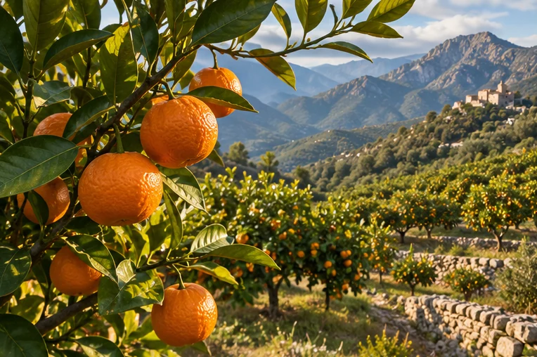
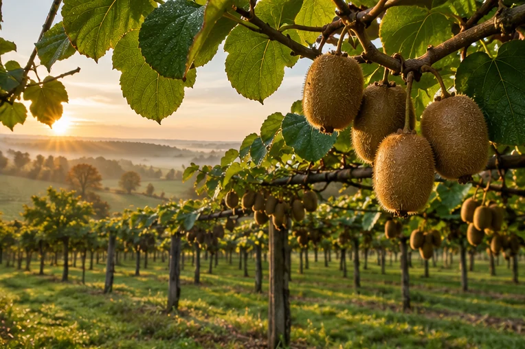
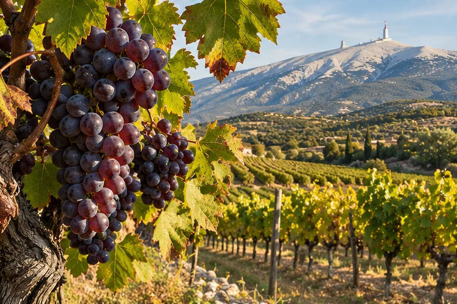

Corse · IGP
Clémentine de Corse
Le climat de l’île donne à ce fruit sa fraîcheur acidulée. La clémentine IGP est cueillie à maturité et se reconnaît souvent à ses feuilles encore attachées.
Explorez les régions de France métropolitaine et les produits qui y sont cultivés.
Contours IGN · Admin ExpressRégion sélectionnée
Trois appellations pour découvrir la géographie derrière les étals. Les paysages sont des illustrations.

Corse · IGP
Le climat de l’île donne à ce fruit sa fraîcheur acidulée. La clémentine IGP est cueillie à maturité et se reconnaît souvent à ses feuilles encore attachées.

Nouvelle-Aquitaine et Occitanie · IGP
Les vergers occupent des sols profonds et bien drainés du bassin de l’Adour, entre Landes, Pyrénées-Atlantiques et Gers.

Provence-Alpes-Côte d’Azur · AOP
Ce raisin noir de table, issu du cépage muscat de Hambourg, pousse dans le Vaucluse. Il se distingue par ses notes parfumées.